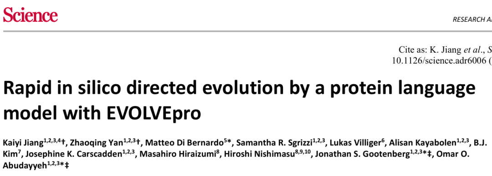
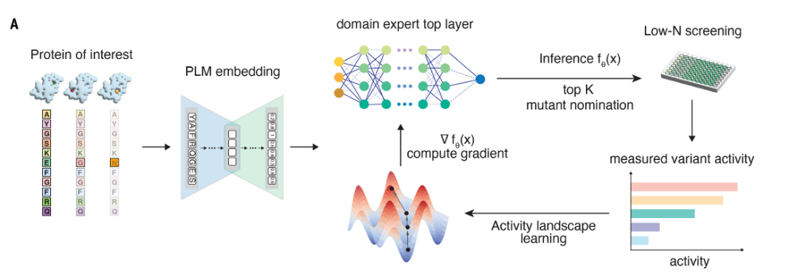
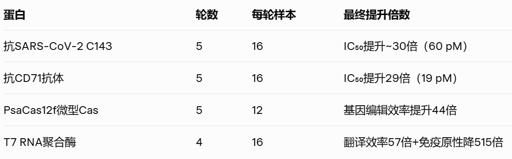
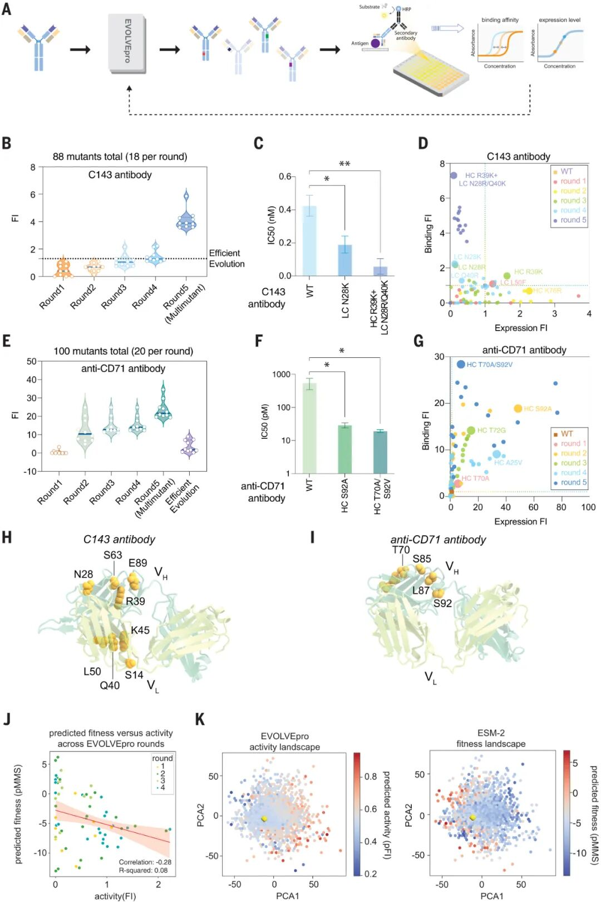
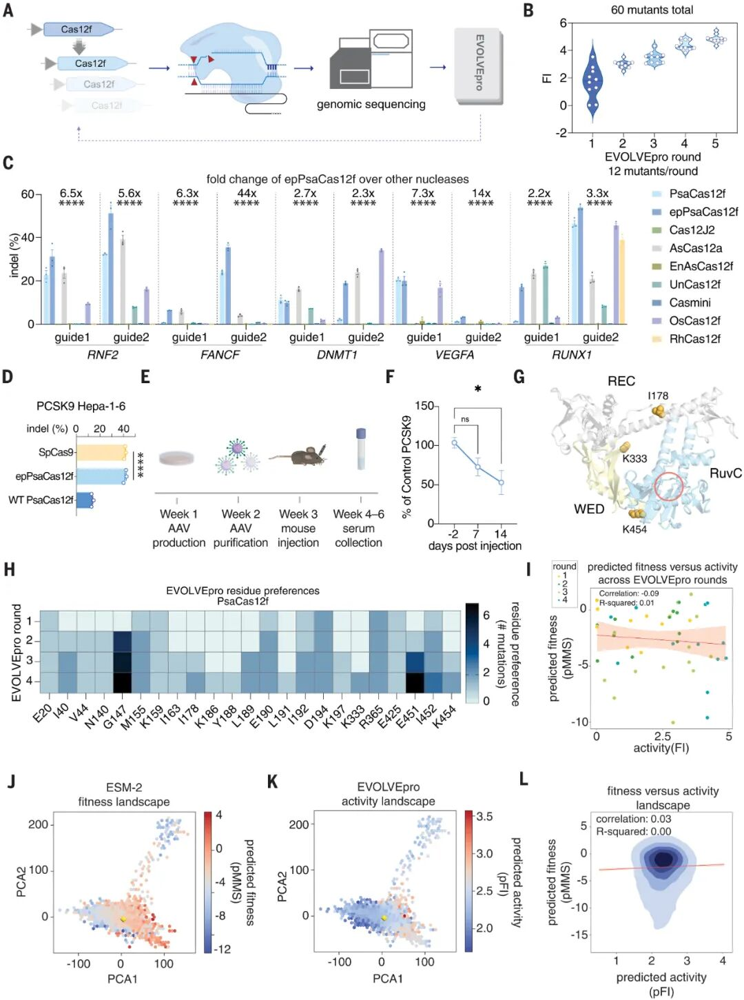
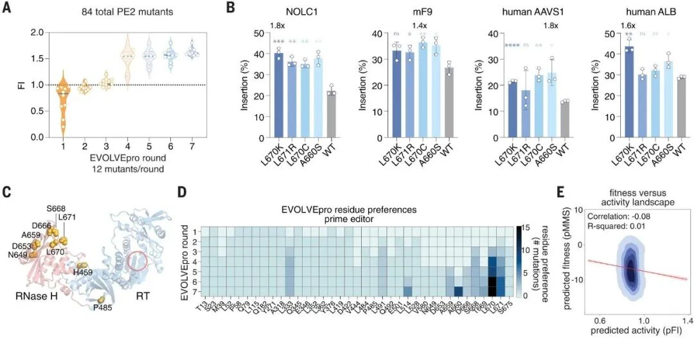
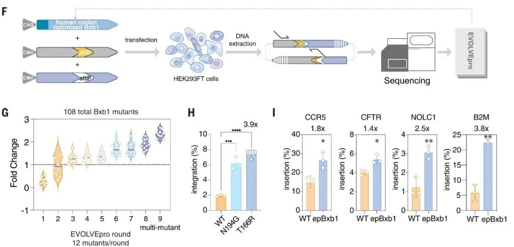
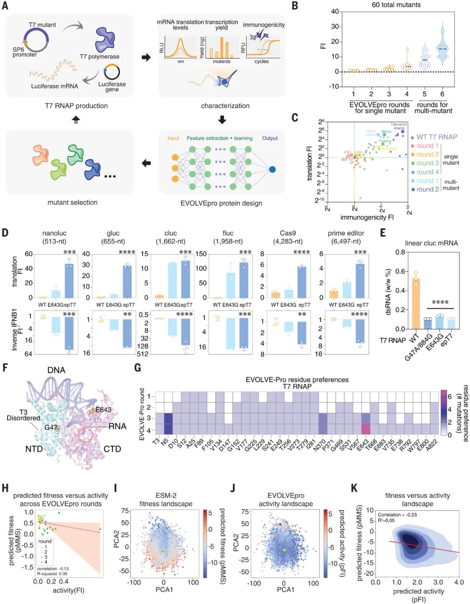
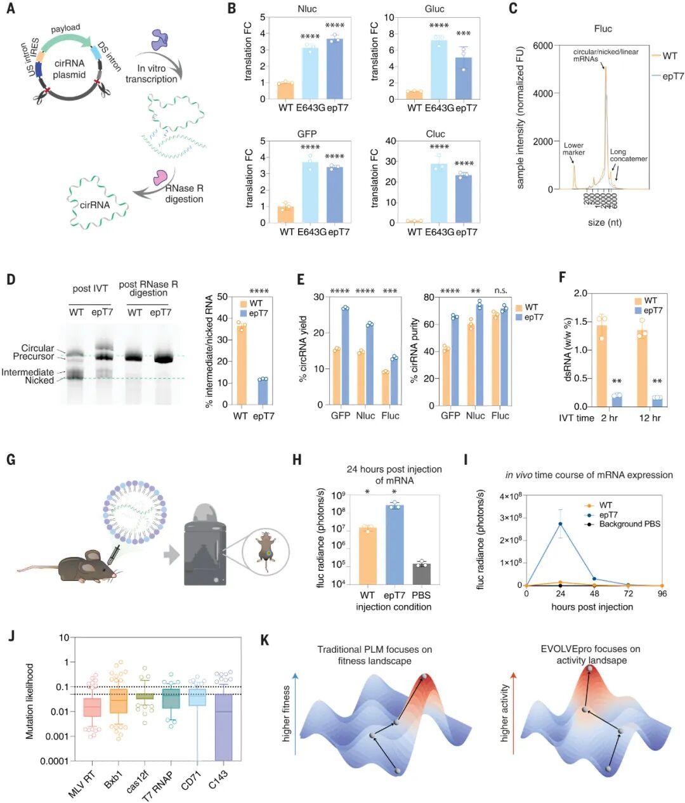

在传统的蛋白质定向进化中，“实验量” 一直是最大的瓶颈：一轮实验常常需要筛选数万甚至数十万个突变，既耗时耗力，又依赖昂贵的高通量设备。
但 Science 2024 最新发表的 EVOLVEpro（Rapid in silico directed evolution by a protein language model with EVOLVEpro） 却反其道而行——每一轮只做 12～16 个实验，就能找到性能显著提升的突变。
它是怎么做到的？
关键在于一个精心设计的 “少量实验主动学习循环”（low‑N active learning loop）。

EVOLVEpro 的秘诀在于将复杂问题拆解为两个默契配合的智能模块：
模块一：ESM 蛋白语言模型（PLM）—— 提供进化“先验知识”
它如同一位饱读文献的蛋白质专家，通过预训练深入理解序列背后的进化规律与结构信息
能够将任意蛋白质序列转化为蕴含丰富语义的数学向量（embedding）
无需专门训练，直接为系统注入宝贵的生物学先验知识
模块二：随机森林小模型 —— 学习“序列→活性”映射
专注于建立序列特征与功能活性之间的精准关联
即使在仅有几十条实验数据的情况下也能高效训练
不仅能预测突变效果，还能评估预测的不确定性，为探索指明方向
强强联合，实现“小样本大预测”
当ESM的宏观生物学洞察遇上随机森林的微观数据分析，系统就能够在极小的实验样本基础上，做出精准而大胆的突变方向预测，这正是用十几个实验实现传统上万个实验效果的核心所在。

每一轮仅用十几个实验的关键，在于最大化每个实验的“信息增益”——每个数据点都被精准用于提升模型的预测能力。
以下是EVOLVEpro每一轮的标准循环流程：
使用ESM-2对所有候选序列进行embedding转换
将每条蛋白质序列映射为高维向量表示
此步骤为无训练的特征提取，旨在“理解”序列的深层语义
基于当前所有实验数据，训练随机森林回归模型
输入：ESM生成的序列embedding
输出：蛋白质的实际功能活性（如结合力、催化效率、表达水平等）
随机森林在此场景下的独特优势：
小样本数据下依然保持稳定表现
能够输出每个预测的不确定性估计
模型对数千至数万条候选突变进行双维度评估：
预测活性值：预期功能表现
预测不确定度：模型对该预测的信心程度
采用UCB（上置信界）策略计算综合得分
优先选择高预测活性与高不确定性兼备的候选序列
从候选池中精选12–16个“信息价值最高”的序列
选择策略既非单纯追求“表现最佳”，也非完全“随机探索”
核心标准：对模型认知提升贡献最大的突变
湿实验团队合成并测量选定序列的真实活性
每轮仅需完成12–16个精心挑选的实验
获得可靠的实验Y值（功能测量结果）
将新获得的实验数据加入训练集
模型基于增强数据集重新训练，开启下一轮循环
随着4–7轮的迭代推进：
模型对蛋白质的“功能景观”认知持续深化
逐渐突破PLM初始的进化偏置限制
能够发现PLM零样本预测无法识别的稀有高效突变
最终以极少的实验总量，获得活性提升数倍的优化蛋白
该方法已在多个关键生物医学蛋白体系中取得突破性成果，展现了广泛的应用潜力。以下是论文中验证的核心应用场景，也代表了未来行业发展的关键方向：

EVOLVEpro 优化效果对比
EVOLVEpro成功优化了包括C143与aCD71在内的多个抗体，实现：
亲和力提升至pM级别
表达量显著提高
关键突变源自自然界“极罕见”区域

适用方向：
抗体药物先导化合物优化
抗体可开发性工程（稳定性/可表达性）
抗体人源化与亲和力成熟
多目标协同优化（亲和力+表达+免疫原性）
优化后的小型Cas12f（epPsaCas12f）表现卓越：
编辑活性提升近5倍
支持单AAV载体在小鼠体内高效编辑
性能超越所有已知小型Cas12f变体

适用方向：
小型CRISPR系统优化
AAV递送兼容的编辑酶开发
PAM谱宽化与编辑效率提升
通过对M-MLV逆转录酶的精准优化：
显著提升长片段（46bp）插入效率
在多个基因位点均观察到性能改善

适用方向：
Prime Editing系统优化
高效率基因编辑平台设计
优化后的整合酶表现：
整合效率提升2.6–4倍

适用方向：
大片段基因插入技术
PASTE平台效率优化
进化获得的epT7聚合酶实现全方位提升：
翻译效率提高30–120倍
免疫原性降低100–500倍
dsRNA副产物显著减少
体内表达水平提升10倍

适用方向：
mRNA疫苗与药物开发
体内表达系统优化
在circRNA生产应用中：
环化率提升2倍
翻译效率大幅提升3–30倍
副产物显著减少

适用方向：
circRNA药物开发
细胞治疗中的基因表达调控
长效表达系统设计
本教程将引导您在半小时内完成EVOLVEpro的首次运行，开启智能蛋白进化之旅。
https://github.com/mat10d/EvolvePro
1. 克隆代码库
git clone https://github.com/mat10d/EvolvePro.gitcd EvolvePro
2. 创建并激活虚拟环境
conda create -n evolvepro python=3.10conda activate evolvepropip install -r requirements.txt
3. 下载ESM-2 15B预训练权重
# 方案一：直接下载（推荐）wget https://dl.fbaipublicfiles.com/fair-esm/models/esm2_t36_15B_UR50D.pt# 方案二：通过HuggingFace自动下载pip install fair-esm# 首次运行时将自动完成下载
4. 准备目标蛋白序列
创建my_protein.fasta文件：
>my_targetMTEYKLVVVGAGGVGKSALTIQLIQNHFVDEYDPTIEDSYRKQVVIDGETCLLDILDTAGQEEYSAMRDQYMRTGEGFLCVFAINNTKSFEDIHQYREQIKRVKDSDDVPMVLVGNKCDLPARTVETRQAQDLARSYGIPYIETSAKTRQGVEDAFYTLVREIRQHKLRKLNPPDESGPGCMSCKCVLS
5. 启动首轮进化
python evolve.py \--fasta my_protein.fasta \--output results/my_target \--rounds 4 \--variants_per_round 16 \--esm_model esm2_t36_15B_UR50D \--n_jobs 32
6. 完成首轮实验测量
系统将输出16个优选突变至results/my_target/round1/variants.csv
在96孔板中完成活性检测（支持ELISA、编辑效率、荧光素酶等多种检测方法）
将实验结果填入测量文件results/my_target/round1/measurements.csv：
variant,activityA123K,2.1G456R,5.7...
7. 继续后续轮次
python evolve.py --resume results/my_target --rounds 4系统自动读取历史数据，10秒内生成下一轮最优16个突变
重复实验测量与模型更新循环，持续优化蛋白性能
EVOLVEpro = AI 的先验 + 少量实验的反馈 + 主动学习的策略
让定向进化进入“低实验量、快收敛、高性能”的新时代。
它不仅是一个方法，更是一套通用的蛋白优化引擎，
未来对抗体药物、基因编辑、RNA 药物、酶工程等领域都有颠覆性意义。